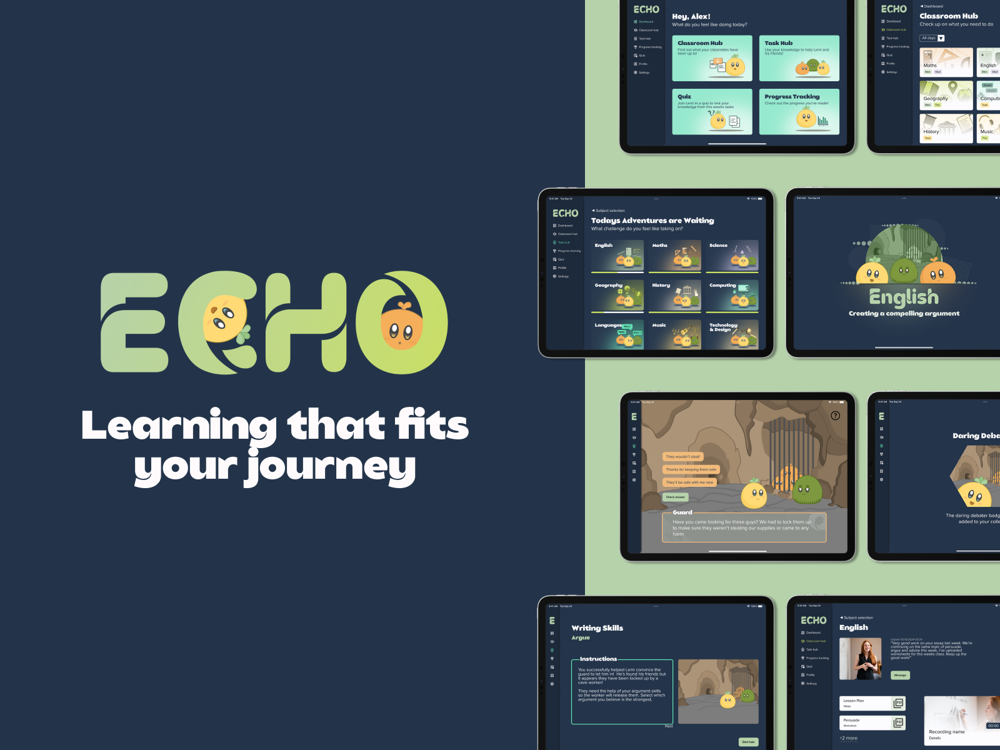

Portfolio
A selection of case studies from my time studying interaction design and working on independent projects.

Echo
Learning that fits your journey
A remote learning solution for chronically ill and disabled students.
Pulse
Designing a smart-watch interface that simplifies daily health tracking for users with chronic conditions.
Wayfinding at Belfast Central
A signage and digital-display system designed to reduce passenger anxiety in a busy interchange station.
Co-Craft
A community platform connecting crafters for in-person workshops and online tutorials. Group project, my role: UX lead.
Altitude
A flight-tracking companion app concept, designed for aviation enthusiasts. A personal passion project.
Library Redesign
Rethinking the digital experience of Belfast's central library — from catalogue search to event booking.